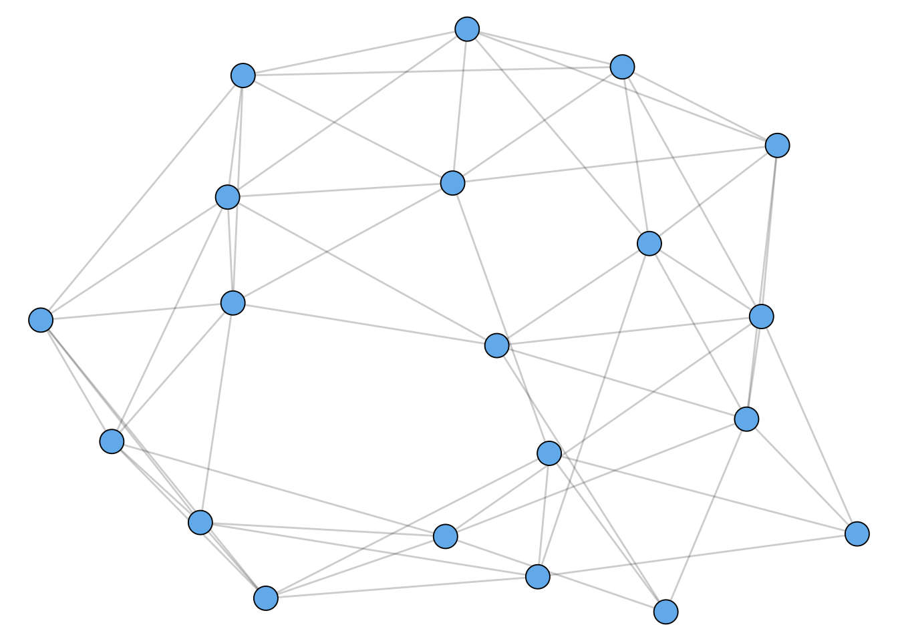

1 Measuring Networks
These lecture notes are based on Chapters 6 and 7 of Newman. They are a short set of highlights, and are not a substitute for actually reading these chapters! There will be content not covered in these notes that you’ll need for homework problems.
1.1 Networks and Matrices
When \(i = j\) for some element of \(E\), this is called a self-loop. Simple graphs contain no self-loops.
See Newman 6.2 for discussion of self-loops and other ways graphs can be non-simple.
Matrices are fundamental tools for studying networks. Why is that? The key point is that a graph is a collection of pairwise relationships encoded by \(E\), and matrices are really good for describing pairwise relationships!
The Adjacency Matrix
Easily the most fundamental of the matrices associated to a graph \(G\) is the adjacency matrix
The reason the adjacency matrix is so important is that it is a lossless representation of the graph structure – given knowledge of \(\mathbf{A}\), you can fully reconstruct the graph. Not all matrices have this property.
Walks
A question that pops up a lot in network analysis is:
How many walks of length \(k\) exist between nodes \(i\) and \(j\)?
The adjacency matrix gives a concise way to address this question. First, let’s consider \(k = 1\). That’s just the number of edges between nodes \(i\) and \(j\), which is exactly \(a_{ij}\). Said another way,
The \(ij\) th entry of \(\mathbf{A}^1\) counts the number of walks of length \(1\) between nodes \(i\) and \(j\).
This turns out to generalize smoothly by induction.
Here’s a sketch of the proof. Suppose that \(\mathbf{W}(k)\) is a matrix whose entry \(w_{ij}(k)\) contains the number of walks between nodes \(i\) and \(j\) of length \(k\). Then, \(\mathbf{W}(k+1) = \mathbf{W}(k)\mathbf{A}\) has entries \(w_{ij}(k+1)\) containing the number of walks of length \(k+1\). To see this, expand the matrix product:
\[[\mathbf{W}(k)\mathbf{A}]_{ij} = \sum_{\ell \in N}w_{i\ell}(k)a_{\ell j}\;.\]
cf. Newman’s eq. 6.22
Working through this exercise and applying induction, you can see that \(\mathbf{W}(k) = \mathbf{A}^k\), which completes the proof.
A Linear Algebra Interlude
What kind of information does the matrix \(\mathbf{A}\) hold about the graph? Well, one answer is “all of it,” because \(\mathbf{A}\) determines the graph up to permutations of node labels. But there’s a more useful answer as well. When we as about the information contained in a matrix, we often look at the eigenvalues and eigenvectors. The eigenvalues and eigenvectors of the adjacency matrix can contain some useful information about the graph structure. Let’s see an example.
Let
\[ \mathbf{K}_n = \left[\begin{matrix} 0 & 1 & 1 & \cdots & 1 \\ 1 & 0 & 1 & \cdots & 1 \\ 1 & 1 & 0 & \cdots & 1 \\ \vdots & \vdots &\vdots &\ddots & \vdots \\ 1 & 1 & 1 & 0 \cdots & 0 \end{matrix}\right]\;. \]
There are \(n\) rows and \(n\) columns.
The is the adjacency matrix of an n-clique: a graph on \(n\) nodes in which all nodes are connected to each other.
Let’s now consider the matrix \[ \mathbf{A}_{2n} = \left[\begin{matrix} \mathbf{K}_n & \mathbf{I}_n \\ \mathbf{I}_n & \mathbf{K}_n \end{matrix}\right]\;. \]
Here, \(\mathbf{I}_n\) is the \(n\times n\) identity matrix.
Now, \(\mathbf{A}_n\) is the matrix of two cliques that have been “paired”, with each node in one clique connected to exactly one node in the other clique. A small example is shown in Figure 1.1.
Code
library(tidygraph)
library(ggraph)
library(tidyverse)
colors <- c("#f5b895", "#0f4c81")
n <- 5
K <- create_complete(n)
K <- K %>%
mutate(x = ifelse(row_number() <= 2, 0, 1),
y = ifelse(row_number() %% 2 == 0, 0, 1))
G <- bind_graphs(K, K) %>%
mutate(id = row_number()) %>%
mutate(x = ifelse(id > n, x + 2, x),
group = round((row_number() <= n)),
group = factor(group))
G <- G %>%
bind_edges(tibble(from = 1:(n), to = 1:(n) + n))
G %>%
ggraph() +
geom_edge_link(start_cap = circle(3, 'mm'),
end_cap = circle(4, 'mm'),
alpha = .3) +
geom_node_point(aes(fill = factor(group), shape = factor(group)), size = 10, color = "black") +
scale_shape_manual(values = c(21, 22)) +
scale_fill_manual(values = colors) +
guides(fill = "none", shape = "none") +
theme(aspect.ratio = 1,
panel.background = element_rect(fill = "white"),
plot.background = element_rect(fill = "white")) What kinds of information are contained in the first few eigenvectors of \(\mathbf{A}_{2n}\)?
In fact, these are the two largest eigenvalues of \(\mathbf{A}\). The first one isn’t very interesting, but note that the second one actually separates the two cliques!
So, suppose we were given a graph where:
- We knew that the graph had the paired-clique structure, but
- We didn’t know which node belonged to which clique.
A way to solve this problem would be to compute the second eigenvector \(\mathbf{v}\). The signs of \(\mathbf{v}\) separate the two cliques. This idea is the foundation of many spectral graph clustering algorithms.
In fact, the adjacency matrix isn’t usually the optimal matrix to use for spectral algorithms. This is a deep and important story related to random matrix theory, which has many connections to network science.
Degrees
The degree is a fundamental quantity in many network analyses. Especially the distribution of degrees in the network can play a major role in both theory and applications.
We often collect the degrees into a diagonal matrix \(\mathbf{D}\) whose diagonal entry \(d_{ii} = k_i\) contains the degree of node \(i\).
The Laplacian
Another very important matrix for network representations is the graph Laplacian matrix. Actually, there are multiple matrices with claim to this name, but the one we’ll usually focus on is the combinatorial Laplacian.
The Laplacian is often used to represent (diffusive) flows of quantities between nodes. To see why, suppose that I have some amount of water \(x_i\) on each node \(i\), and that I collect this into a vector \(\mathbf{x}\). Now, consider the vector \(\mathbf{L}\mathbf{x}\).
\[ \begin{align} [\mathbf{L}\mathbf{x}]_i &= \sum_{j} \left(d_{ij}x_j - a_{ij}x_j \right) \\ &= \underbrace{k_ix_i}_{\text{flow out of }i} - \underbrace{\sum_{j} a_{ij}x_j}_{\text{flow into }i}\;. \end{align} \]
The first term distributes the water \(x_i\) at node \(i\) to each of \(i\)’s \(k_i\) neighbors, while the second term allows water to flow into node \(i\) from each neighbor along each edge connecting them.
The Laplacian matrix \(\mathbf{L}\) will appear in several places throughout this course, when we consider random walks, graph partitioning, and dynamical systems.
Many More Matrices…
There are LOTS of matrices that can be associated to networks. There’s no “right” one – some are more useful than others for certain jobs. Throughout this course, we’ll see examples of matrices that are well-suited to certain specific tasks, like ranking or clustering. If you’re interested in searching around a bit, some other fun matrices are:
- The nonbacktracking or Hashimoto matrix.
- The modularity matrix.
- The random-walk transition matrix.
- The random-walk and symmetric normalized Laplacian matrices.
- The PageRank matrix.
- The node-edge incidence matrix.
And the list goes on!
Directed and Weighted Graphs
Newman Chapter 6 contains a nice introductory discussion of directed and weighted graphs. We won’t spend a lot of time on these at this stage of the course, but it’s worthwhile reading this material as it may be of interest as you think about projects.
Measures and Metrics
There are lots of questions we can ask about network data. Even in the setting of simple graphs, there are some very interesting questions with surprisingly complex answers. In this section, we’ll consider some (not all) of the most important things to measure in networks.
Ideas Connected to Walks
Walks are a fundamental idea in networks. If we imagine networks as connecting things together, walks and walk counts are direct quantifications of how “connected” the network really is. Here are a few things we can measure about networks using walks.
Connected Components
Intuitively, a disconnected network is fragmented into two or more pieces. Almost all network analysis problems are most interesting and challenging when the network is connected, and so we’ll often assume this in data analysis applications. Mathematically, however, the question of when certain models of networks become connected has a very rich theory that we’ll see a small part of.
Geodesics and Graph Diameter
Code
library(tidygraph)
library(igraph)
library(ggraph)
set.seed(1234)
g <- erdos.renyi.game(20, 40, type = "gnm") %>%
as_tbl_graph()
path <- shortest_paths(g, 5, 12)$vpath
E(g, path=path[[1]])$on_path <- TRUE
g <- g %>%
as_tbl_graph() %>%
activate(edges) %>%
mutate(on_path = !is.na(on_path))
g %>%
ggraph() +
geom_edge_link(aes(width = on_path), alpha = 0.7) +
geom_node_point(size = 7, pch = 21, fill = "#73b9ee") +
theme_void() +
scale_edge_width_manual(values = c(.3, 2)) +
guides(edge_color = "none", edge_width = "none")Another way to say this is that, in a connected graph, the diameter is the distance between the two nodes that are farthest away.
Betweenness Centrality
How important is a node? We’ll come back to this question several times in the course. The idea of geodesic paths allows us to consider one approach to this question:
This idea leads us to the idea of betweenness centrality.
Figure 1.2 shows a network with nodes sized according to their betweenness centrality.
Code
library(tidygraph)
library(ggraph)
library(igraph)
library(tidyverse)
library(igraphdata)
data(karate)
g <- karate %>%
as_tbl_graph() %>%
mutate(btwn = centrality_betweenness())
g %>%
ggraph() +
geom_edge_link(alpha = 0.2) +
geom_node_point(aes(size = btwn), pch = 21, fill = "#73b9ee") +
theme_void() +
guides(size = "none") +
scale_size_continuous(range = c(3, 15))Katz Centrality
Here’s another centrality concept that is going to draw on our linear algebra skills a bit.
Recall that \(\mathbf{A}^k\) has entries that count the total number of walks of length \(k\) between two nodes. Here’s an alternative idea of node importance:
This idea takes a bit more effort to operationalize mathematically.
First, the number of walks of length \(k\) that lead to each node can be computed by the vector \(\mathbf{v}(k) = \mathbf{A}^k\mathbf{1}_n\). Now, \(v_i(k)\) gives the total number of \(k\)-walks that lead to node \(i\). Now, the total number of walks of length \(\ell\) or less leading to \(i\) is \(\sum_{k = 1}^{\ell} v_i(k)\).
Now, if we all \(\ell \rightarrow \infty\), then we’ll find that the total number of walks to \(i\) is infinite. But we can make progress if we instead decide that short walks are more important than longer walks. This makes sense – if I have to go on a long walk to find you, then you might be in a relatively remote, out-of-the-way location.
So, we’ll add a discount factor \(\alpha < 1\). A walk of length \(k\) gets a discount of \(\alpha^k\). The weighted number of walks to \(i\) is \(\sum_{k = 1}^{\infty} \alpha^kv_i(k)\). The vector containing this information for each node is the vector
\[ \mathbf{v}(\alpha) = \sum_{k = 1}^{\infty} \alpha^k\mathbf{v}(k)\;. \]
Perhaps surprisingly, we’re not stuck. Recall the definition of \(\mathbf{v}(k)\), which lets us write
\[ \mathbf{v}(\alpha) = \sum_{k = 1}^{\infty} \alpha^k\mathbf{A}^k\mathbf{1}_n = \left[\sum_{k = 1}^{\infty} (\alpha\mathbf{A})^k\right]\mathbf{1}_n\;. \]
Now we need a matrix trick.
Compare this theorem to the geometric series formula \[ \sum_{k = 1}^{\infty} r^k = (1 - r)^{-1} - 1 \] for scalar \(\left|r \right| < 1\).
We can use this result to compute \(\mathbf{v}(\alpha)\). Provided that \(\alpha\) is smaller than \(\frac{1}{\left|\lambda\right|}\) for any eigenvalue \(\lambda\) of \(\mathbf{A}\), we have the Katz centrality.
Code
library(tidygraph)
library(ggraph)
library(igraph)
library(tidyverse)
library(igraphdata)
data(karate)
g <- karate %>%
as_tbl_graph() %>%
mutate(btwn = centrality_katz(alpha = .05))
g %>%
ggraph() +
geom_edge_link(alpha = 0.2) +
geom_node_point(aes(size = btwn), pch = 21, fill = "#73b9ee") +
theme_void() +
guides(size = "none") +
scale_size_continuous(range = c(3, 15))As shown in Figure 1.3, the Katz centrality leads to less dramatic results, while still highlighting nodes that appear to be “in the center” of the graph.
Triadic Closure (Transitivity)
Think of two of your friends. Are they friends with each other? This kind of “coincidence” happens quite frequently in social networks. Let’s look at two ways to quantify this effect.
In graph terms, when you think of two of your friends, you are thinking of two edges connected to you in your social network, and asking whether there exists a third edge that creates a triangle. So, we have a situation like that shown in Figure 1.4.
Code
library(ggraph)
library(tidyverse)
library(tidygraph)
tbl_graph(
edges = tibble(
from = c(1, 1, 3),
to = c(2, 3, 2),
q = c(FALSE, FALSE, TRUE)
)
) %>%
ggraph() +
geom_edge_link(aes(edge_linetype = q), alpha = 0.6, edge_width = 3) +
geom_node_point(pch = 21, fill = "#73b9ee", size = 15) +
theme_void() +
guides(edge_linetype = "none")When the dotted line “closes the triangle,” we often call this “closing the triangle.* The phrase triadic closure, also sometimes called transitivity, refers to the existence of large numbers of closed triangles in many social networks.
How do we quantify triadic closure? There’s a simple approach to this:
In this definition, the denominator is the number of pairs of neighbors of node \(i\). We can think of this as counting the number of possible triangles. The numerator is then the number of realized triangles. The local clustering coefficient is always a number between 0 and 1.
The local clustering coefficient tells us about the rate of triadic closure around a specific node \(i\). There is also a global clustering coefficient that quantifies the rate of triadic closure in the entire network. The idea is the same: it’s the proportion of possible triangles that are actualized:
The reason for the factor of 3 in the numerator is that the same triangle can be formed from 3 different wedges.
cf. Newman p. 184
The prevalence of triadic closure in many real-world networks motivated one of the first mega-papers in network science, which proposed a mathematical model of networks that included clustering (Watts and Strogatz 1998). A sample from this model is shown in Figure 1.5. This paper has now been cited 48,000 times over 24 years.
Code
library(igraph)
library(ggraph)
g <- sample_smallworld(1, 20, 3, 0.05)
g %>%
ggraph() +
geom_edge_link(alpha = 0.2) +
geom_node_point(pch = 21, fill = "#73b9ee", size = 6) +
theme_void() +
guides(size = "none")
Community Structure and Graph Cuts
Many networks display what is sometimes called community structure. There isn’t really a formal definition of community structure, but it refers broadly to the idea that a graph can often be divided into multiple parts. Here’s an example of a graph with community structure:
Code
# R code
library(tidygraph)
library(ggraph)
set.seed(1234)
g <- play_islands(2, 10, 0.7, 2)
g %>%
ggraph() +
geom_edge_link(alpha = 0.5) +
geom_node_point(size = 7, pch = 21, fill = "#73b9ee", color = "black") +
theme_void()You might be able to visually separate this graph into two pieces. Heuristically, what we’re looking for is lots of edges within each piece, but few edges between the pieces.
Let’s formalize this a bit.
Note: “clustering” here is confusingly and totally unrelated to the “clustering coefficients” from before.
The reason for the factor \(1/2\) is that we don’t need to count the edges \((i,j)\) and \((j,i)\) separately – it’s the same edge!
An important special case arises when we aim to partition a graph into two clusters. In this case, we can write the cut size in terms of our friend, the combinatorial graph Laplacian.
Let \(\mathbf{s} \in \mathbb{R}^n\) be the vector with entries
\[ s_i = \begin{cases}+1 &\quad i \in C_1 \\ -1 &\quad i \in C_2\end{cases}\;. \]
Looking Ahead
An important question to ask about many of these metrics is:
What counts as a large, surprising, or meaningful value of a given metric?
One way to address this question is to take some value and compare it to one that we believe to be small, unsurprising, or not meaningful. We often operationalize this by saying that “a random graph” would have some property, such as a low clustering coefficient. So, a high clustering coefficient is surprising, and suggests that the graph might not be “random.” This motivation takes directly to the study of random graphs, which is one of the mathematical foundations of network science.